Raphael
Minha página pessoal
Olá! Eu sou o Raphael e tenho 15 anos.
Fiz esta página para mostrar um pouco dos meus gostos e as pessoas que eu mais amo nesta vida.
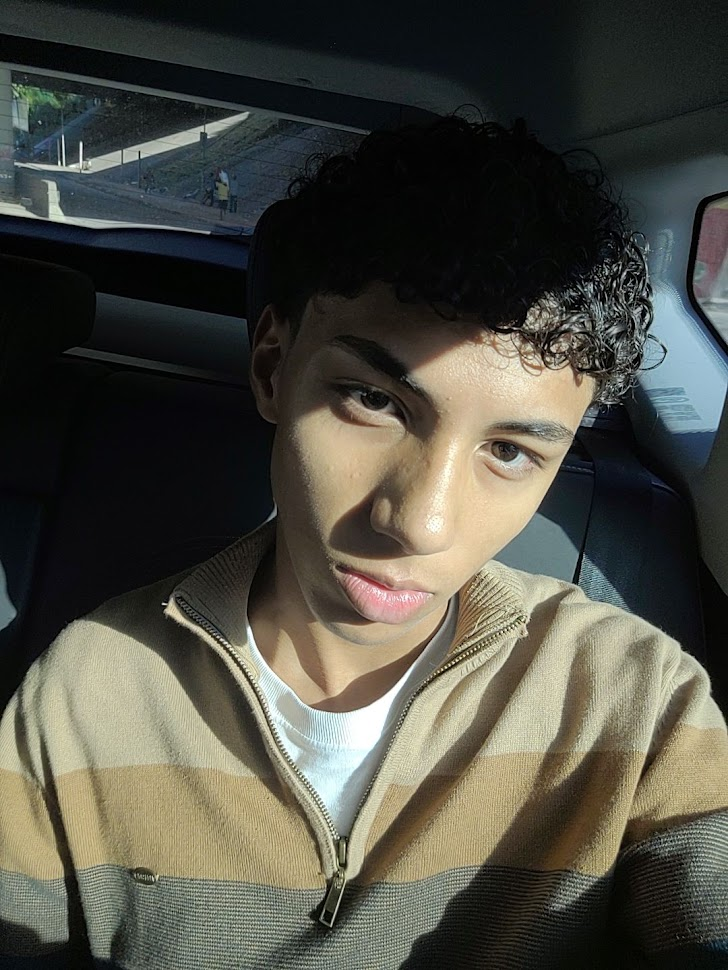
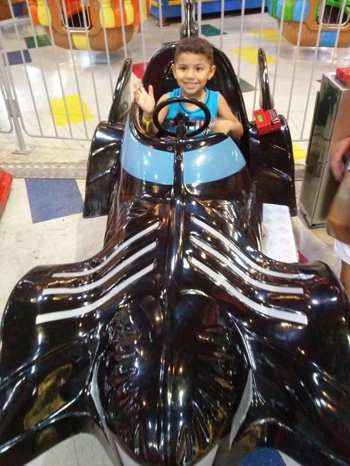
Quem eu sou
Meu nome
Meu nome é Raphael Braga, mas a maioria me chama de Braga. Foi meu pai quem escolheu o nome, e eu até agradeço, até porque eu não tenho nada a ver com Eduardo, o nome que minha mãe queria.
Minha cidade
Hoje em dia, eu moro em Carapicuíba, em São Paulo, do lado da Granja Viana. Também morei em Cotia e Osasco em outros períodos da minha vida.
Meu jeito
Desde pequeno, minha mãe já me ensinava que eu tinha que fazer o que achava correto, e meu pai me ensinava a ser firme naquilo em que acredito. Além disso, nunca liguei para quaisquer características que os outros tenham e sempre busquei acolher a todos. Acho que isso faz muita falta hoje em dia.
O que eu gosto de fazer
Jogar
Eu jogo desde pequeno. Sempre foi meu jeito de desviar da realidade, e o padrão fora da curva que os jogos possuem me encanta de uma forma extraordinária. Tive o PS2, o Xbox 360 e o PS4, mas hoje em dia finalmente conquistei meu PC e um PS5. Sou muito grato por isso.
Tocar violão
Ando meio parado recentemente e nunca cheguei a ser bom de verdade, mas eu gosto. A ideia de tocar para alguém sempre me animou. Poder dedicar a voz e a alma à música é algo que poucos sabem fazer.
Isa
Eu AMO essa garota mais que qualquer pessoa no universo. Qualquer oportunidade de poder estar com ela é uma bênção para mim. Nosso caminho juntos nunca foi fácil, mas é assim que as coisas mais bonitas se formam, certo?
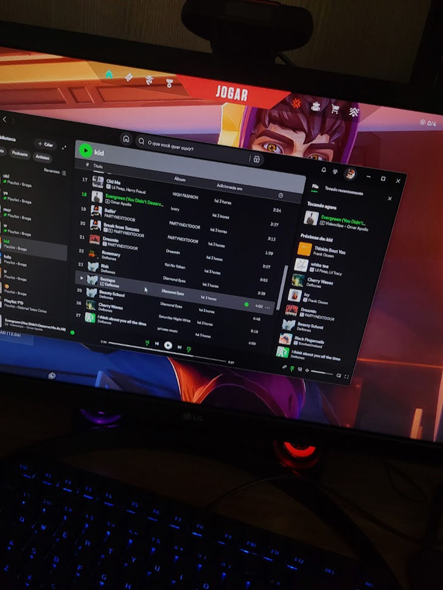
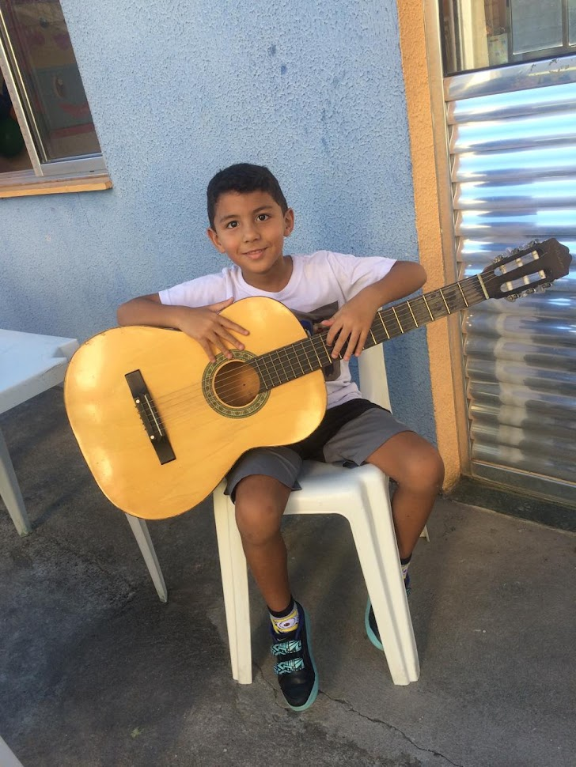
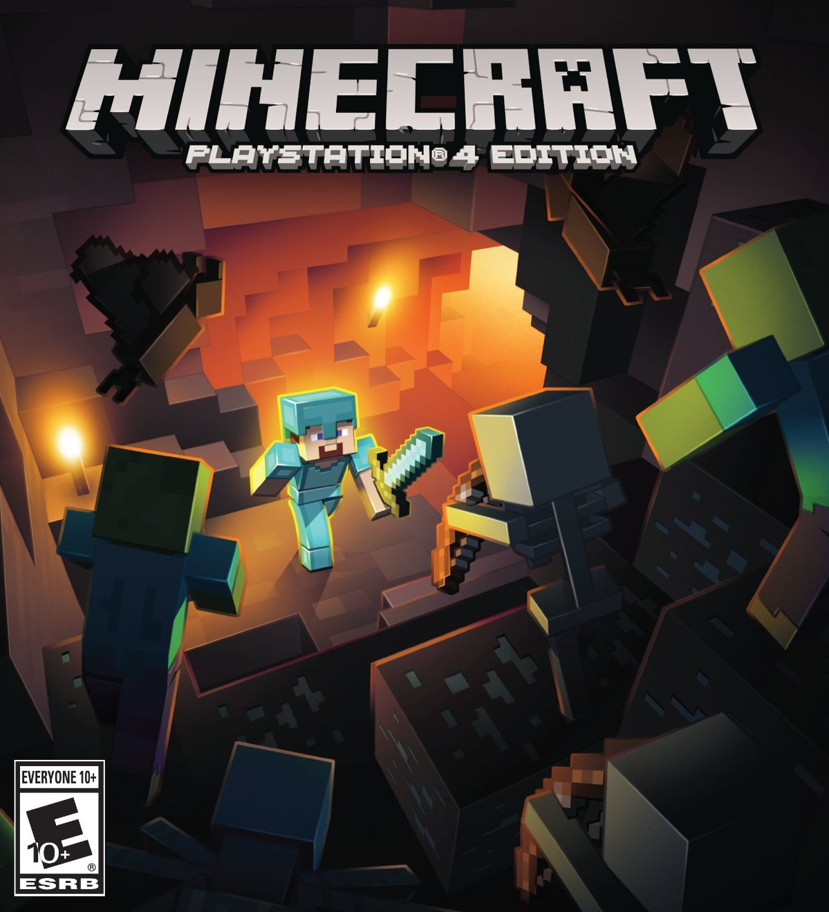
Meus gostos
Músicas
Alguns artistas e bandas que gosto de ouvir:
- Cigarettes After Sex
- Linkin Park
- Playboi Carti
Eu não faço ideia do que mais gosto de ouvir nem de qual é a minha música favorita.
Eu só clico no Spotify e escuto um pouco de cada. A música em si me encanta.
Jogos
Alguns jogos de que eu gosto:
- The Last of Us Part II
- Red Dead Redemption 2
- Minecraft
Minecraft não é meu jogo favorito hoje em dia, mas houve um tempo... Um tempo em que ele era meu conforto. Eu chamava meus primos e amigos para jogar, e cada um desses momentos marcou minha infância.
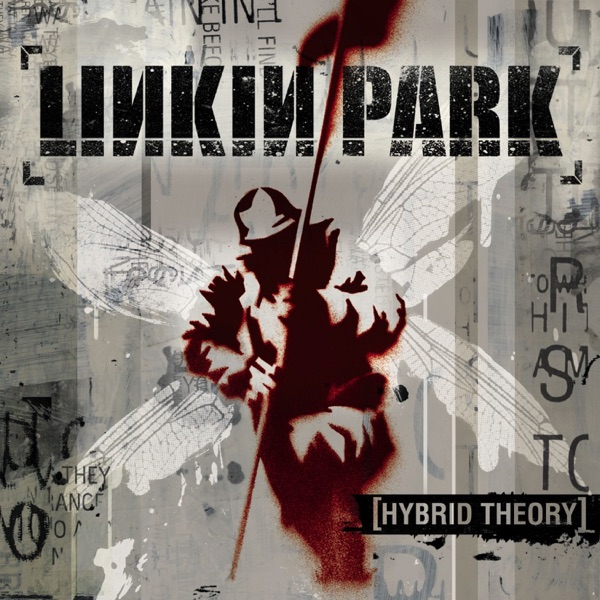
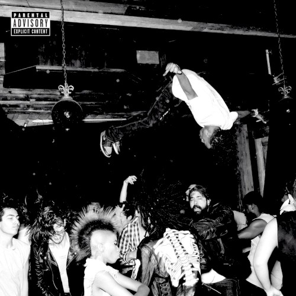
Pessoas importantes
As pessoas podem ser más, de verdade, mas eu sei que existem pessoas boas até demais nesse mundo. Elas provam isso. Cada uma dessas pessoas é minha paixão: são elas que me dão força e um motivo genuíno para continuar.
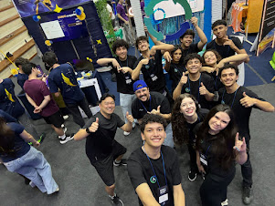
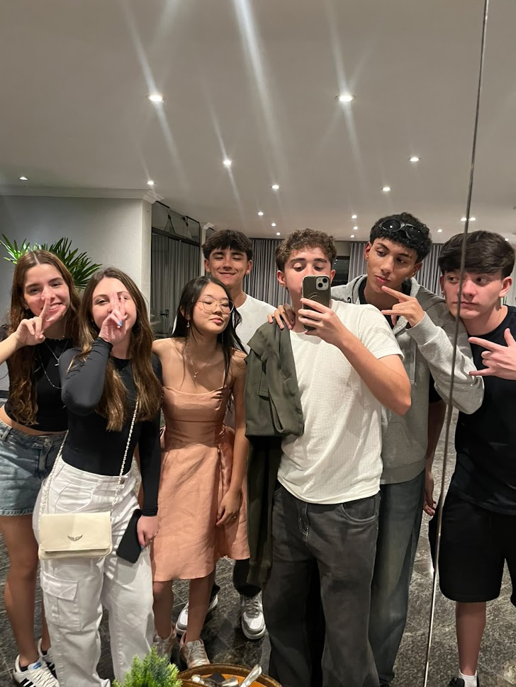
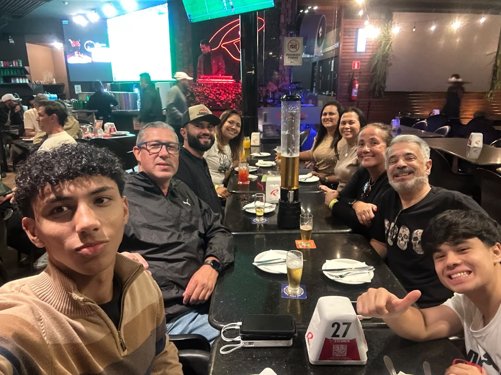
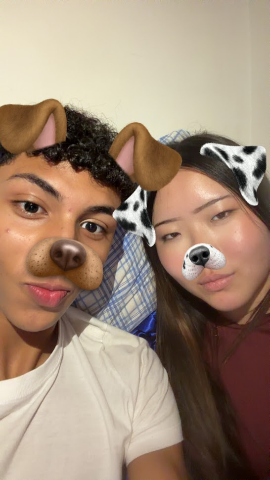
Meu maior amor, eu te amo!